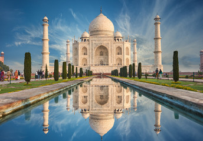
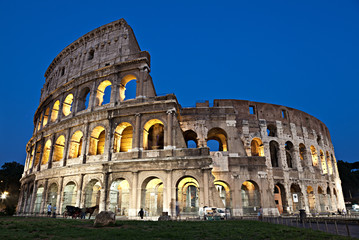
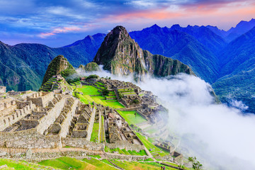
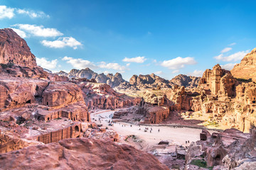
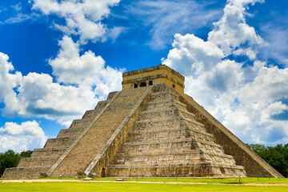
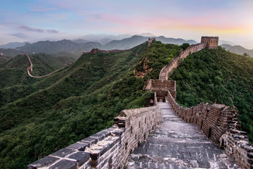

TAJ MAHAL |
|
|---|---|
| This mausoleum complex in Agra, India, is regarded as one of the world’s
most iconic monuments and is perhaps the finest example of Mughal architecture.
It was built by Emperor Shah Jahān to honor his wife Mumtāz Maḥal. More >> |
 |
Colosseum |
|
|  | The Colosseum is the great oval amphitheater in the center of Rome where
gladiators once fought for their life. The largest amphitheater ever built,
it was constructed from sand and stone over eight years, from AD72 to AD80. More >> |
Christ the Redeemer |
|
| The totemic statue of Christ the Redeemer stands over Rio de Janeiro on
the top of Mount Corcovado. At 30 meters tall, this monument is an iconic
emblem of Brazil. More >> |
|
Machu Picchu |
|
|  | Machu Picchu is a lost treasure of the 15th century, a rare citadel
discovered high in the Andes mountains above the Peruvian Sacred Valley. More >> |
Petra |
|
| Petra, the ancient city in southern Jordan is also known as the
‘rose city’ for its golden hue. It dates as far back as 312BC. Set in a
remote valley, this ancient city was founded by the Arab Nabataeans More >> |
 |
Chichén Itzá |
|
|  | Deep in the Mexican state of Yucatán lies Chichen Itza, a historic
Mayan city built between the 9th and 12th centuries. Constructed by the
pre-Columbian Mayan tribe Itzá. More >> |
The Great Wall Of China |
|
| The Great Wall of China is a huge barrier that spans thousands of
miles along China’s historic northern border. Created over millennia,
built as protective barriers against nomadic raids. More >> |
 |